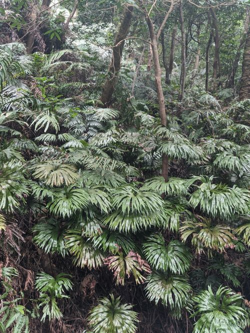

Dipteridaceae
Umbrella Fern / Fan Fern Family (associated with Dipteris)
Dipteridaceae is a small family of leptosporangiate ferns within the order Gleicheniales, notable for its highly distinctive frond architecture. The fronds typically exhibit a primary dichotomy (fork) at the top of the petiole, followed by repeated pseudodichotomous branching, creating a characteristic fan-shaped or umbrella-like lamina with reticulate venation. These terrestrial ferns have creeping rhizomes covered in stiff bristles and produce small, circular, exindusiate sori. The family is found in tropical Asia, Malesia, and the western Pacific, often in open or disturbed habitats.
Overview
Dipteridaceae is a small but distinctive family belonging to the Gleicheniales, an early diverging order of leptosporangiate ferns. Its members, primarily the genus Dipteris, are immediately recognizable by their unique frond structure. A long petiole (stalk) terminates in a primary true dichotomy (fork), and each resulting branch then undergoes further divisions that appear dichotomous but are actually pseudodichotomous (where the apical bud aborts and lateral buds take over), creating a broad, fan-like or umbrella-shaped blade.
These ferns possess long-creeping rhizomes covered in stiff, dark bristles or hairs, allowing them to spread terrestrially. Unlike the related Gleicheniaceae which often form dense thickets, Dipteridaceae species may grow more openly. They are typically found in sunny, open habitats, forest margins, clearings, or disturbed areas like landslides in tropical regions from Southeast Asia to the Pacific islands. Another key feature is their reticulate (net-like) venation pattern, distinguishing them from the free venation typical of Gleicheniaceae. Their reproductive structures are small, round sori lacking indusia, scattered on the lower surface of the frond segments.
Quick Facts
- Scientific Name: Dipteridaceae
- Common Name: Umbrella Fern / Fan Fern Family
- Number of Genera: 1-2 (Dipteris; sometimes Cheiropleuria)
- Number of Species: Approximately 9-11
- Distribution: Tropical Asia, Malesia, Western Pacific
- Evolutionary Group: Ferns (Division Pteridophyta / Monilophyta, Class Polypodiopsida, Subclass Polypodiidae, Order Gleicheniales, Type: Leptosporangiate)
Key Characteristics
Rhizome and Habit
Plants are terrestrial ferns with long-creeping rhizomes that are protostelic. Rhizomes are covered with stiff, dark, multicellular bristles or hairs (not true scales). Plants grow terrestrially, often in open, sunny, or disturbed habitats.
Fronds (Leaves)
Fronds possess a highly distinctive architecture. The long petiole terminates in a primary dichotomy (true fork). Each main branch then divides repeatedly in a pseudodichotomous and anadromous fashion (forking towards the frond apex with unequal development of subsequent branches), ultimately forming a large, complexly divided, fan-shaped or umbrella-like lamina. The ultimate segments are variously shaped. A key feature is the reticulate venation, where veins form a network, often with free-ending veinlets within the meshes (areoles). Young fronds exhibit circinate vernation.
Reproductive Structures (Sori and Sporangia)
Reproduction is via spores produced in leptosporangia. The sporangia are grouped into small, round sori located on the abaxial (lower) surface of the frond segments. Sori are superficial (not marginal) and typically situated on vein junctions or vein endings within the areoles of the reticulate venation. Sori are exindusiate (lacking an indusium).
Each sorus contains relatively few sporangia (similar to Gleicheniaceae), which may be mixed with multicellular hairs (paraphyses). The sporangia possess a complete, oblique annulus.
Spores are typically monolete or trilete and non-green. The gametophyte generation is surface-dwelling, green, and thalloid.
Field Identification
Dipteridaceae ferns are readily identified by their unique fan- or umbrella-shaped fronds resulting from a combination of true and pseudo-dichotomous branching, along with their reticulate venation.
Primary Identification Features
- Fan-shaped / Umbrella-like Frond: Lamina architecture derived from an initial true dichotomy followed by repeated pseudodichotomous branching.
- Reticulate Venation: Veins form a distinct network pattern within the frond segments.
- Bristly/Hairy Rhizome: Long-creeping rhizome covered with stiff, dark hairs or bristles.
- Small, Circular, Exindusiate Sori: Sori are round, lack an indusium, and are scattered on the lower surface within the vein network.
- Tropical Asian/Pacific Distribution: Found in specific tropical regions.
Secondary Identification Features
- Long Petiole: Frond stalk is typically long relative to the divided blade.
- Open Habitat Preference: Often found in sunny, disturbed areas or forest margins.
Seasonal Identification Tips
- Year-Round Identification: The unique frond shape is usually visible year-round.
- Fertile Fronds: Finding fertile fronds with the small, scattered, naked sori helps confirm identification.
Common Confusion Points
- Gleicheniaceae: Also in Gleicheniales with forking fronds, but branching is entirely pseudodichotomous (lacks the primary true dichotomy at the petiole apex), venation is typically free, and rhizomes may have scales or hairs.
- Matoniaceae: Another Gleicheniales family with umbrella-like fronds, but branching pattern differs, and sori are indusiate (have an indusium).
- Cheiropleuria: Sometimes included in Dipteridaceae. Has dimorphic fronds (simple sterile, different fertile) and different soral arrangement, usually considered distinct.
- Other Fan-Shaped Plants: Some unrelated plants might have fan shapes (e.g., palms), but lack the characteristic fern structures (rhizome, circinate vernation, sori).
Field Guide Quick Reference
Look For:
- Terrestrial fern with fan/umbrella-shaped fronds
- Frond branching: Primary dichotomy + pseudodichotomy
- Reticulate venation (net-like)
- Creeping rhizome with bristles/hairs
- Small, round sori on underside, away from margin
- No indusium (exindusiate)
- Tropical Asia/Malesia/W Pacific habitat
Key Variations:
- Depth of frond dissection
- Presence/absence of paraphyses in sori
- Overall frond size
Notable Examples
The family is primarily represented by the genus Dipteris.

Dipteris Reinw.
Umbrella Fern, Fan Fern (Genus; species include D. conjugata, D. lobbiana)
The core genus, defined by the characteristic fan-shaped fronds arising from a primary dichotomy, reticulate venation, bristly rhizomes, and small, exindusiate sori scattered on the lower surface. Found across tropical Asia and the western Pacific.

Cheiropleuria C.Presl
(Genus; species C. bicuspis)
Sometimes placed in Dipteridaceae (or its own family Cheiropleuriaceae). Differs significantly from Dipteris, having dimorphic fronds: simple, entire sterile fronds and long, narrow fertile fronds with continuous marginal or submarginal sporangial areas (acrostichoid). Shares the bristly rhizome and reticulate venation. Found in similar regions.
Phylogeny and Classification
Dipteridaceae is a family within the order Gleicheniales, representing an early diverging lineage of leptosporangiate ferns (subclass Polypodiidae). Along with Gleicheniaceae and Matoniaceae, it forms a distinct clade characterized by certain primitive features (like protostelic rhizomes) and unique derived traits (like specialized frond architectures).
Molecular phylogenetics confirms the placement of Dipteridaceae within Gleicheniales and supports its close relationship to Gleicheniaceae and Matoniaceae. The inclusion or separation of Cheiropleuria remains a point of discussion, sometimes treated as a distinct family (Cheiropleuriaceae) within the same order.
Position in Plant Phylogeny
- Kingdom: Plantae
- Division: Pteridophyta / Monilophyta (Ferns and Allies)
- Class: Polypodiopsida
- Subclass: Polypodiidae (Leptosporangiate Ferns)
- Order: Gleicheniales
- Family: Dipteridaceae
Evolutionary Significance
Dipteridaceae provides valuable evolutionary insights:
- Complex Frond Architecture: Demonstrates an unusual combination of true dichotomous and pseudodichotomous branching, creating a unique fan-like structure.
- Reticulate Venation: Represents an instance of net-like venation evolving relatively early within the leptosporangiate ferns.
- Basal Leptosporangiate Lineage: Helps understand the characteristics and relationships among the earliest branches of the Polypodiidae.
- Paleotropical Biogeography: Its distribution pattern reflects the history and connections of tropical floras in Asia and the Pacific.